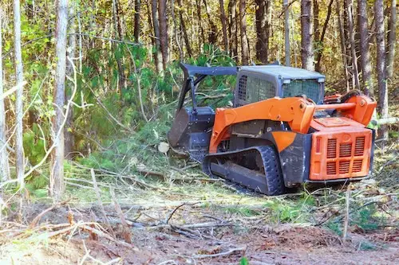

Brush & tree trimming
Thorough trimming of bushes and trees. Cleaner look, healthier growth, fewer safety hazards from overgrowth.

Tree and brush trimming, stump removal, forestry mulching and ground clearing. Family-owned, with the machines to finish the job.
Equipment the company lists on its own site.
Thorough trimming of bushes and trees. Cleaner look, healthier growth, fewer safety hazards from overgrowth.
Stump removalStumps ground below ground level so the yard is clean, level and ready to use.
Forestry mulchingDedicated mulching equipment clears heavy growth fast with a low-impact approach.
Ground clearingBrush, trees and overgrowth removed for site prep and land cleanup, mulching included.
Yard clean-up & debris removalLeaves, branches and yard waste hauled off.
Also working in Cabarrus and Iredell Counties. Not sure if you're covered? Call and ask.
Describe the job and the crew will get back to you. Prefer to talk it through?
(704) 707-7619Kanncord Yard Services
Concord, NC 28027